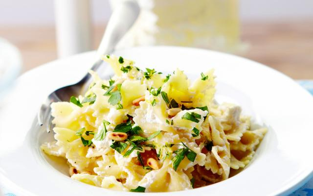

Pasta met gremolata

Ingrediënten
- kerstomaten 300 g
- tagliatelle (groene) 400 g
- mozzarella 125 g
- basilicum
- basilicum
- peper
- fleur de sel
Bereiding
- 1 Spoel de kerstomaatjes en halveer ze.
- 2 Kook de pasta volgens de aanwijzingen op de verpakking. Giet af.
- 3 Pluk de mozzarella in stukjes, verdeel ze met de tomaatjes op de pasta.
- 4 Werk af met basilicumblaadjes, olijfolie, versgemalen peper en een beetje fleur de sel.